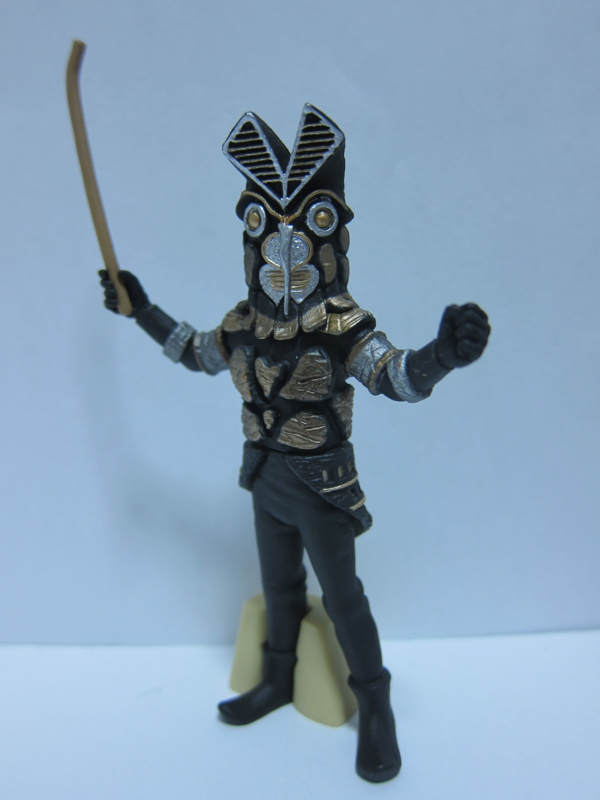

raor
blog:http://ameblo.jp/kaitomon/
Twitter:@raor7192
HP:準備中…
どうも､一応web担当のraorです｡
2013年の5月頃に自分のwebサイトを作るためにHTML等の勉強を始めたのですが､そこからPHPやFlash等に手を出してしまったため(きっかけはどれもwebサイトのコンテンツ作成のためですが)本来の目標を達成出来ていないまま現在に至って います｡
基本的に多趣味なのであまり多くの時間を割くことは出来ませんが､ぼちぼちwebサイトも作成していくので応援して頂ければ幸いです｡
Twitter:@raor7192
HP:準備中…
どうも､一応web担当のraorです｡
2013年の5月頃に自分のwebサイトを作るためにHTML等の勉強を始めたのですが､そこからPHPやFlash等に手を出してしまったため(きっかけはどれもwebサイトのコンテンツ作成のためですが)本来の目標を達成出来ていないまま現在に至って います｡
基本的に多趣味なのであまり多くの時間を割くことは出来ませんが､ぼちぼちwebサイトも作成していくので応援して頂ければ幸いです｡